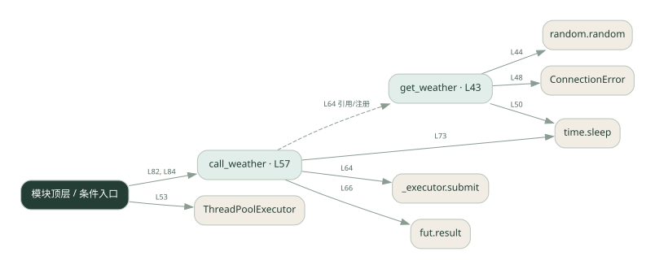

1-8 · 全课程第 8 节
工具超时与重试
robust_tools.py
源码快照 596906ee56a4 · 静态解析 · 2026-09-10
01 / 要完成的事
给天气工具增加失败重试、超时处理和结果缓存。
02 / 为什么要做
外部请求会失败或重复发生，不能让一次偶发错误终止整个流程。
03 / 当前代码状态
get_weather 用随机故障/等待模拟服务。Future.result(timeout=...) 只限制等待结果，不会杀掉线程；线程池上下文退出可能继续等待任务。
主要展示本地计算、内存状态或模拟流程；是否写文件/启动子进程请看调用表。 本次只做静态解析，没有运行练习，也没有替你填写或修改原代码。
04 / 调用图
打开大图 ↗实线：源码中的直接调用；虚线：函数引用/注册、动态调用或按方法名推断的候选。L 是调用所在源码行号。箭头不表示执行顺序或每次必经；分支、循环、异步调度及框架内部调用需结合源码。灰色是外部/未解析目标，橙色是动态分发；省略 print、len 和常规容器操作以减少干扰。孤立函数可能尚未接入。

先从 模块入口 出发，沿箭头找到本文件函数，再查看外部调用或动态分发。右侧调用清单保留所有静态调用点，能回到原文件逐行对照。
05 / 函数定位
| 函数 / 定义行 | 职责（源码注释） | 内部调用 |
|---|---|---|
get_weatherL43 | 以源码函数体为准；下列调用展示其依赖。 | random.random, ConnectionError, time.sleep |
call_weatherL57 | 以源码函数体为准；下列调用展示其依赖。 | range, _executor.submit, fut.result, print, time.sleep |
这样做的优点
临时故障可恢复，相同查询命中缓存时减少重复请求。
代价与局限
重试增加延迟；按城市缓存会过期。缓存查询结果不等于保证写操作幂等。
适用场景
只读查询、可以安全重复的工具。
不宜直接照搬
扣款、发信等有副作用的操作，除非另有业务幂等机制。
动手检验理解
让第一次请求失败，检查重试次数；再查同城，检查缓存是否省去请求。
有未实现位置时先预测，再补齐验证。能启动不等于逻辑正确。
查看全部 18 个静态调用 / 引用点
| 调用方 | 目标 | 源码行 | 类型 |
|---|---|---|---|
| get_weather | random.random | 44 | 调用 |
| get_weather | ConnectionError | 48 | 调用 |
| get_weather | time.sleep | 50 | 调用 |
| <模块入口> | ThreadPoolExecutor | 53 | 调用 |
| call_weather | range | 63 | 调用 |
| call_weather | _executor.submit | 64 | 调用 |
| call_weather | fut.result | 66 | 调用 |
| call_weather | print | 70 | 调用 |
| call_weather | print | 72 | 调用 |
| call_weather | time.sleep | 73 | 调用 |
| <模块入口> | print | 80 | 调用 |
| <模块入口> | range | 81 | 调用 |
| <模块入口> | print | 82 | 调用 |
| <模块入口> | call_weather | 82 | 调用 |
| <模块入口> | print | 83 | 调用 |
| <模块入口> | print | 84 | 调用 |
| <模块入口> | call_weather | 84 | 调用 |
| call_weather | get_weather | 64 | 引用/注册 |